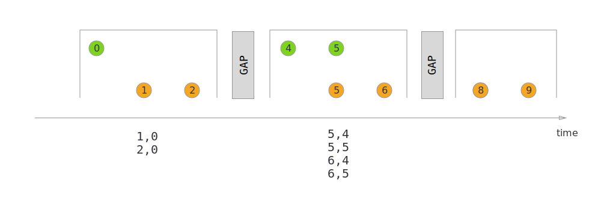

Jobs im Detail
Jobs im Detail
Übersicht der APIs für Flink-Anwendungen
DataStream API :
Flexible API, die mit Streams und Windows arbeitet
Ermöglicht sowohl low-level Stream-Processing Operationen (über ProcessFunctions) als auch high-level Operationen
für Java (oder Scala); Python hat eine eigene Version "PyFlink DataStream API"
Table API :
high-level API, die mit dynamischen Tabellen arbeitet
für Java, Python
Flink SQL :
Sehr high-level API, die mit SQL-Anfragen arbeitet, die Streams ähnlich wie Tabellen in RDBs behandeln
SQL-Unterstützung basiert auf Apache Calcite
unterstützt nur eine Teilmenge der SQL-Statements
Interaktion mit Cluster über "SQL Client" Anwendung von Flink
DataSet API (veraltet)
DataStream API
→ In diesem Kapitel arbeiten wir ab jetzt mit der Data Stream API
Struktur einer DataStream-Anwendung (in Java)
Eine ausführbare Flink-Anwendung kann einen oder mehrere Jobs enhthalten
Für jeden auszuführenden Job:
Definition eines StreamExecutionEnvironment
Operatoren werden dem StreamExecutionEnvironment in der Reihenfolge ihrer Anwendung hinzugefügt
Auf dem StreamExecutionEnvironment wird die Methode execute ausgeführt
Dies übergibt den Job zur Ausführung an einen JobManager
Beispiel:
public class HelloFlink {
public static void main(String[] args) throws Exception {
StreamExecutionEnvironment env = StreamExecutionEnvironment.getExecutionEnvironment();
DataStream<String> dataStream = env.fromElements(
"Hello",
"World");
dataStream.print();
env.execute();
}
}StreamExecutionEnvironment
Erstellung eines StreamExecutionEnvironment über statische Factory-Methoden:
getExecutionEnvironment() :
erstellt Umgebung zur Ausführung im Flink-Cluster
wenn die Anwendung lokal als normale Java-Anwendung (z.B. in der IDE) gestartet wird, wird statt dessen eine lokale Umgebung in nur einer JVM erstellt (für Tests geeignet)
JobManager und TaskManager erhalten dann jeweils einen Thread
createLocalEnvironment() :
erzwingt lokale Ausführung
createRemoteEnvironment(String host, int port, String… jarFiles) :
versucht Ausführung in einem Flink-Cluster an dem angegebenen Ort, ggf. mit Dependencies
es gibt jeweils Varianten, die noch eine Configuration mitgeben können
Wenn man die Table API verwendet, muss statt dessen ein TableEnvironment erstellt werden
Aufgabe 0, Teil 2
Erster Blick auf einen Flinkjob in Java
Downloaded Sie sich den Sourcecode von Aufgabe 0 und öffnen Sie das Projekt in IntelliJ
Bauen Sie das Projekt mit "mvn clean install"
Führen Sie die Klasse Aufgabe0 über die IDE mit "Run" aus, um die Flinkanwendung lokal zu starten
Stellen Sie zunächst in der Run Configuration folgendes ein:
die Option "Add dependencies with 'provided' scope to classpath"
Java Version 11
Sehen Sie sich den Log in der Konsolenausgabe gründlich an
Aufgabe 0, Teil 3
Erstellen Sie ein eigenes Maven-Projekt über die Konsole, indem Sie in einem von Ihnen erstellen Ordner den folgenden Befehl ausführen:
mvn archetype:generate \
-DarchetypeGroupId=org.apache.flink \
-DarchetypeArtifactId=flink-quickstart-java \
-DarchetypeVersion=1.17.1 \
-DgroupId=flinkSchulung \
-DartifactId=flinkDemo \
-Dversion=1.0-SNAPSHOT \
-DinteractiveMode=falseÖffnen Sie das erstellte Projekt in IntelliJ und stellen Sie sicher, dass Sie es mit Maven bauen können
Sie können das Projekt als Basis für weitere Aufgaben verwenden
DataStream API : Datentypen
Welche (Java) Datentypen können mit Flink gestreamt und für State verwendet werden ?
Flink hat einen nativen Serialisierer, der folgende Typen unterstützt:
Primitive Typen und String, Date, BigDecimal, BigInteger, void
Aus solchen Typen (rekursiv) zusammengesetzte Typen:
Arrays, Lists, Maps, Tuples
Plain Old Java Objects (POJOs, eingeschränkt)
Tuples sind ein einfacher Wrapper von Flink für zusammengesetzte Typen
Verwendung z.B. Tuple2<String, Integer>
Der native Serialisierer wird bei passenden Datentypen per Default von Flink verwendet und bietet die beste Performance
DataStream API : Datentypen (2)
Regeln für nativ serialisierbare POJOs :
Top-Level Klasse mit public access
hat einen public no-argument Konstruktor
nicht-statische Felder haben nativ serialisierbare Typen und public access oder public Getter und Setter
Jede andere Klasse, die das Serializable-Interface implementiert:
Wird per default als generischer Typ mit dem Kryo-Framework serialisert
Kryo ist flexibel, aber langsam
Auch Apache Avro wird unterstützt und kann nach Einbinden einer geeigneten Dependency verwendet werden
Darüber hinaus lassen sich auch eigene Serialisierer definieren
ExecutionConfig
StreamExecutionEnvironment kann über seine ExecutionConfig konfiguriert werden
Beispiel:
StreamExecutionEnvironment env = StreamExecutionEnvironment.getExecutionEnvironment();
ExecutionConfig config = env.getConfig();
config.setAutoWatermarkInterval(100);
config.setRestartStrategy(RestartStrategies.noRestart());DataStream<T>
Die Klasse DataStream<T> ist die zentrale Abstraktion der DataStream API
steht für einen Stream, der Datensätze vom Typ T enthält
DataStreams können aus einer Source (Quelle) abgeleitet werden
DataStream<String> helloStream = env.fromElements("Hello", "World");Operatoren können mittels einer Fluent API zu Streams hinzugefügt und konfiguriert werden
der ursprüngliche Stream ist der Input des Operators, der zurückgegebene Stream der Output
DataStream<String> lowercaseStream = helloStream.map(String::toLowerCase);mit der sinkTo Methode kann der DataStream mit einer Sink (Senke) verknüpft werden
lowercaseStream.sinkTo(FileSink.forRowFormat(new Path("path"), new SimpleStringEncoder<String>("UTF-8"))
.build());DataStream API : Source
Erstellung einer Source mit einem StreamExecutionEnvironment env:
Stream aus einzelnen Elementen oder einer Collection:
env.fromElements(element1, element2, ..)
env.fromCollection(collection)
Stream aus Socket mit Textdaten :
env.socketTextStream(..)
Generische Quelle :
Interface SourceFunktion<T> implementieren
hinzufügen mit env.addSource(sourceFunction)
DataStream API : Source aus Datei
Beispiel für Stream aus einer Datei:
benötigt Dependency flink-connector-files
DataStream<String> inputLines = FileSource.forRecordStreamFormat(
new TextLineInputFormat(),
new Path("path"))
.build()liest Textdatei zeilenweise als Stream von Strings
Kurze Variante ohne zusätzliche Dependency (deprecated):
DataStream<String> inputLines = env.readTextFile("path");Verwendung von DataGeneratorSource und KafkaSource (Beispiel)
Erstellung einer DataGeneratorSource für einen automatisch generierten Stream:
erfordert die Dependency flink-connector-datagen
DataGeneratorSource<String> source =
new DataGeneratorSource<>(
index -> "Record#" + index,
numRecords,
RateLimiterStrategy.perSecond(1),
Types.STRING);Erstellung einer KafkaSource aus einem Kafka Topic:
erfordert die Dependency flink-connector-kafka
KafkaSource<String> source = KafkaSource.<String>builder()
.setProperties(config)
.setTopics("topic1", "topic2")
.setValueOnlyDeserializer(new SimpleStringSchema())
.build();DataStream API : Sinks
Sinks mit einem Stream verknüpfen:
Konsolenausgabe:
stream.print()
stream.printToErr()
Dateiausgabe (deprecated zugunsten von flink-connector-files):
stream.writeAsText(<Path>, <FileSystem.WriteMode>)
stream.writeAsCsv(<Path>)
stream.writeUsingOutputFormat(<OutputFormat>)
Socket :
stream.writeToSocket(<hostName>, <port>, <SerializationSchema>)
Generische Sink :
Interface Sink<T> (flexibler) bzw. SinkFunction<T> implementieren
hinzufügen mit stream.sinkTo(sink) bzw. stream.addSink(sinkFunction)
DataStream API : Beispiel Custom SinkFunction
Beispiel für eine SinkFunction, die Datensätze in Batches an ein (nicht gezeigtes) externes System schickt:
public class BufferingSink<T>
implements SinkFunction<T>{
private final int threshold;
private List<T> bufferedElements = new ArrayList<>();
public BufferingSink(int threshold) {
this.threshold = threshold;
}
@Override
public void invoke(T value, Context context) throws Exception {
bufferedElements.add(value);
if (bufferedElements.size() >= threshold) {
for (T element : bufferedElements) {
// send it to the sink
}
bufferedElements.clear();
}
}
}DataStream API : Verwendung von KafkaSink (Beispiel)
Festlegung der Serialisierung des Outputs der Senke:
KafkaRecordSerializationSchema<MyClass> serializer =
KafkaRecordSerializationSchema.<MyClass>builder()
.setTopic("topic1")
.setValueSerializationSchema(new JsonSerializationSchema<>())
.build();Erstellung der Konfiguration für den Kafka Producer (nicht gezeigt)
Erstellung der Senke :
KafkaSink<MyClass> kafkaSink = KafkaSink.<MyClass>builder()
.setKafkaProducerConfig(config)
.setRecordSerializer(serializer)
.setDeliveryGuarantee(DeliveryGuarantee.NONE)
.build();Hinzufügen zum Job :
stream.sinkTo(kafkaSink);DataStream API : Einfache Transformationen
Wir sehen uns zunächst an, wie sich einfache stateless Operatoren erstellen lassen
Die Syntax in der DataStream API ist teilweise angelehnt an die Java Stream API
gegeben sei jeweils ein Stream "stream" vom Typ DataStream<MyClass> für eine serialisierbare Klasse MyClass
stream.map(mapFunction)
erstellt aus jedem einzelnen Element in einem InputStream ein neues Element im Outputstream nach einer angegebenen Vorschrift
mapFunction ist vom Typ MapFunction<MyClass, OtherClass> und kann durch einen lambda-Ausdruck gegeben werden (ähnliches gilt für die folgenden Transformationen)
DataStream<Double> doublesStream = integerStream.map(
x -> Double.valueOf(x) / 2
);DataStream API : Filter
stream.filter(filter)
gibt Teilstream der Elemente im Stream aus, für die der Filter true ergibt
filter ist vom Typ FilterFunction<MyClass>
DataStream<Integer> evenNumbersStream = integerStream.filter(
x -> x % 2 == 0
);DataStream API : FlatMap
stream.flatMap(flatMapFunction)
erstellt aus jedem Streamelement einen Stream von neuen Elementen, die jeweils dem Outputstream angehängt werden
flatMapFunction ist vom Typ FlatMapFunction<MyClass, OtherClass> und implementiert die Methode flatMap(MyClass, Collector<OtherClass>)
mit collector.collect(item) können Daten zum Ausgabestream hinzugefügt werden
es müssen nicht zu jedem Input Outputelemente generiert werden
DataStream<String> stringStream = collectionStream.flatMap(
(Collection<String> collection, Collector<String> collector) -> {
for (String item : collection) {
collector.collect(item);
}
}).returns(Types.STRING);Der Typ des Outputstreams muss bei Verwendung eines lambda-Ausdrucks durch anschließende Anwendung der returns(TypeInformation<Type>) Methode explizit angegeben werden
DataStream API : KeyBy
stream.keyBy(keySelector)
erzeugt einen partitionierbaren KeyedStream<MyClass, KeyType>
KeyedStream<MyClass, KeyType> extends DataStream<MyClass>
keySelector ordnet Datensätzen einen Key vom Typ KeyType zu
ermöglicht mehr Optionen für parallel processing
manche Operatoren sind nur auf KeyedStreams anwendbar
KeyedStream<Polygon, Color> keyedPolygonStream = polygonStream.keyBy(
polygon -> polygon.getColor()
);DataStream API : Reduce
keyedStream.reduce(reduceFunction)
erstellt eine Rolling Aggregation (stateful), bei der Input- und Outputtyp identisch sind
mit jedem neuen Datensatz erfährt das Aggregat für den Key dieses Datensatzes ein Update und wird ausgegeben
wird auf einen KeyedStream<MyClass> angewendet und produziert einen DataStream<MyClass>
benötigt eine ReduceFuntion<MyClass>
die ReduceFunction sollte symmetrisch in ihren beiden Eingaben sein, da diese nicht unterscheidbar sind
DataStream<Integer> sumsByKey = numberStream.reduce((number1, number2) -> number1 + number2);im Beispiel entsteht ein Stream aus Zahlen ohne Keys
Falls die Keys später benutzt werden sollen, müssen sie aus den Outputdatensätzen selber extrahierbar sein
Aufgabe 2
Erstellen Sie mit Java einen Flink Job, der folgendes tut:
Nimmt eine Menge von Textzeilen als Quelle (im Code als Konstante definieren oder aus Datei auslesen)
Schreibt einen Stream von Zeilen in eine Datei
Für jedes Wort in einer der Inputzeilen gibt es eine Ausgabezeile
Die Ausgabezeilen haben das Format "Wortname : Anzahl"
wobei "Anzahl" die Anzahl der bisher verarbeiteten Vorkommen des Wortes angibt
Inputzeilen, die mit dem Zeichen "#" anfangen, werden allerdings nicht berücksichtigt
Testen Sie ihren Job, indem Sie ihn auf einem Flink-Cluster ausführen, und verifizieren Sie die Ausgabe
Aufgabe 2 (Hinweise)
Bauen Sie Ihren Job mit Maven als JAR, um ihn auf dem Cluster auszuführen zu können (siehe Aufgabe 0)
Um die Anzahl der Vorkommen von einem Wort mit einem reduce zu zählen, kann ein zusammengesetzter Datentyp verwendet werden, der neben dem Wort auch einen Zähler enthält
DataStream API : Festlegen des Parallelismus
Setzen des Parallelismus für einen Operator :
wende die Methode setParallelism(parallelism) auf einen Stream nach Anwenden des Operators an
parallelism ist hier eine positive ganze Zahl (1 für nicht-parallel)
Setzen des Parallelismus für einen Job :
wende anfänglich die Methode setParallelism(parallelism) auf das StreamExecutionEnvironment an
Setzen des Parallelismus für eine Anwendung :
führe den Befehl "flink run" mit Parameter "-p parallelism" aus
Setzen des Parallelismus für alle Jobs auf einen Cluster :
Setzen des Parameters parallelism.default in conf/flink-conf.yaml (Default : 1)
Speziellere Einstellungen überschreiben (wenn vorhanden) immer die allgemeineren Defaults
DataStream API : Operator Chaining
Flink fasst per Default automatisch Operatoren mit einer Forward-Verbindung zu einer Kette zusammen (operator chaining)
Über die API lässt sich dieses Verhalten folgendermaßen einschränken:
Anwendung der Methode disableOperatorChaining() auf dem StreamExecutionEnvironment deaktiviert operator chaining komplett
Anwendung der Methode disableChaining() auf einen Stream nach Anwendung eines Operators deaktiviert operator chaining für diesen Operator
→ dieser Operator erhält immer einen eigenen Task
Anwendung von startNewChain() nach einem Operator verhindert, dass dieser mit seinen upstream Operatoren verkettet wird
statt dessen wird er nur (soweit möglich) mit seinen downstream Operatoren verkettet
Aufgabe 3 (1)
Starten Sie Ihren Job aus Aufgabe 2 noch einmal und sehen Sie sich in der Web UI (Dashboard) an, welche Operatoren von Flink verkettet wurden und mit welchem Parallelismus die Tasks ausgeführt wurden
Warum wurde die Verkettung von Flink in der Weise gewählt?
Starten Sie den Job erneut, aber mit einem Parallelismus von 4
Sie erhalten wahrscheinlich eine Fehlermeldung über nicht vorhandene Ressourcen, da Ihr Cluster nicht automatisch weitere TaskManager starten kann
Stoppen Sie alle vorhandenen TaskManager über die Konsole
Setzen Sie in der Datei conf/flink-conf.yaml den Parameter taskmanager.numberOfTaskSlots auf 2
Starten Sie 2 neue TaskManager
Verifizieren Sie im Dashboard, dass es nun genau 2 TaskManager mit je 2 Slots gibt
Starten Sie den Job erneut
Sehen Sie sich den Job wiederum im Dashboard an
Aufgabe 3 (2)
Sehen Sie sich Art und Reihenfolge der Ausgaben an
Bewirken Sie durch geeignete Zuordnung von Keys, dass Wörter mit gleichen Anfangsbuchstaben von der gleichen Sink-Instanz bearbeitet werden
Führen Sie den Job erneut aus und sehen Sie sich die Ausgabe an
Modifizieren Sie nun den Job, sodass die Sink mit Parallelismus 1 arbeitet und führen ihn erneut (mit Parallelismus 4) aus
Vergleichen Sie wieder die Ausgabe
Probieren Sie aus, wie sich die Anzeige ihres JobGraph im Dashboard verändert, wenn Sie den Parallelismus eines der Operatoren auf 2 setzen oder das operator chaining eines Operators über die API unterbinden
DataStream API : ProcessFunction
ProcessFunctions sind ein Grundbaustein der DataStream API, die es ermöglichen, beliebige Operatoren auf niedriger Abstraktionsebene zu implementieren
KeyedProcessFunction sind ein Spezialfall für KeyedStreams
Anwenden einer ProcessFunction auf einen Stream geschieht über die Methode process(processFunction)
Die folgende Methode wird für jeden Datensatz einmal aufgerufen:
public abstract void processElement(I input, Context context, Collector<O> output)Ähnlich wie bei flatMap können mit dem Collector auch mehrere Elemente emittiert werden
zusätzlich steht ein Context zu Verfügung, der u.a. Zugriff auf Timestamp und Key (für KeyedProcessFunction) des Elements ermöglicht
DataStream API : ProcessFunction (2)
Beispiel: Ein Filter als ProcessFunction:
public class MyLengthFilterFunction extends ProcessFunction<String, String> {
@Override
public void processElement(String input, Context context, Collector<String> collector) {
if (input.length() < 5) {
collector.collect(input);
}
}
}Anwendung auf einen Stream:
StreamExecutionEnvironment env = StreamExecutionEnvironment.getExecutionEnvironment();
DataStream<String> myStream = env.fromElements("Test", "TestLang");
myStream.process(new MyLengthFilterFunction())
.print(); // "Test"DataStream API : Stateful ProcessFunction
Um in einer ProcessFunction einen State nutzen zu können, müssen wir die open Methode überschreiben, um den State initial zu registrieren
Diese kommt aus dem allgemeineren RichFunction Interface
Beispiel einer KeyedProcessFunction mit ValueState, die Datensätze nach Keys zählt und mit Zähler ausgibt (Aggregation):
public class CountByKeyFunction<K, I> extends KeyedProcessFunction<K,I, Tuple2<I, Long>> {
private ValueState<Long> state;
@Override
public void open(Configuration parameters) {
state = getRuntimeContext().getState(new ValueStateDescriptor<>("countState", Long.class));
}
@Override
public void processElement(I input, Context context, Collector<Tuple2<I, Long>> collector) throws Exception {
Long value = state.value();
Long newValue = value == null ? 1 : value + 1;
state.update(newValue);
collector.collect(new Tuple2<>(input, newValue));
}
}DataStream API : ProcessFunction State Typen
Neben ValueState<T> können wir in einer ProcessFunction auch die anderen im letzten Kapitel dargestellten Arten von State verwenden:
ReducingState<T> ist eine Variation, bei der mit jedem neuen Eintrag automatisch eine ReduceFunction angewendet wird, um einen einzelnen Ergebniswert zu updaten
AggregatingState<IN,OUT> ist ähnlich, aber ermöglicht allgemeinere Rolling Aggregations
für einen BroadcastStream, der wiederum mit der broadcast Methode eines DataStreams erzeugt wurde
Union List State hat keinen eigenen Typ, sondern wird als Pattern für vereinigte Streams (union Operation, s.u.) mit ListStates verwendet
DataStream API : Distributionstransformationen
Datenaustauschstrategien sind in Flink über sog. Distributionstransformationen konfigurierbar
die Einstellung wird in den meisten Fällen besser von Flink automatisch gehandhabt
Die folgenden Methoden können auf DataStreams nach Anwendung eines Operators aufgerufen werden, um zu kontrollieren, wie dieser Operator seinen Output auf seine downstream Operatoren verteilt:
shuffle() : entspricht random Strategie
rebalance() : round-robin (gleichmäßig)
rescale() : round-robin, aber jede Operatorinstanz schickt ihre Daten nur an eine gewisse Teilmenge der Instanzen von downstream Operatoren
die Teilmengen werden von Flink so gewählt, dass sich eine effiziente Verarbeitung gibt
für den Fall gedacht, dass downstream Operatoren einen höheren Parallelismus haben (am besten ein Vielfaches)
broadcast() : entspricht broadcast Strategie
global() : sendet alle Outputs an nur den ersten downstream Task
partitionCustom(partitioner, keySelector) : partitioniert Output nach vorgegebenen Schema
DataStream API : Distributionstransformation partitionCustom
partitionCustom
ähnlich wie keyBy
erfordert Angabe eines KeySelector, um einen Key aus einem Datensatz zu generieren
zusätzlich ein Partitioner, um aus einem Key und einer Anzahl von Partitionen eine Partitionsnummer zu bestimmen
Unterschiede zu keyBy
low-level
physische, aber keine logische Partitionierung : produziert aus einem DataStream wieder einen DataStream, keinen KeyedStream
erlaubt Nummer des Empfängers eines Datensatzes über den Key direkter zu steuern
DataStream API : Multistream Transformationen und Side Output
Bisher haben wir nur gelernt, wie wir eine lineare Pipeline als Flink-Job umsetzen können
Um beliebige Job-Graphen zu realisieren, benötigen wir eine Möglichkeit, für einen Operator mehrere andere Operatoren als Quelle seines Inputs oder Ziel seines Outputs festzulegen
Hierfür stellt die API die Features Multistream Transformationen (mehrere Inputs) und Side Output (mehrere Outputs) zu Verfügung
DataStream API : Multistream Transformationen
Der Fall, dass ein Operator mehr als einen Inputstream benötigt, wird in der API so gehandhabt, dass die Inputstreams zunächst mit gewissen Transformationen zu einem Stream zusammengefasst werden
Hierfür stehen mehrere Transformationen auf DataStreams zur Verfügung:
stream.union(otherstream1, otherstream2, ..)
leitet alle Elemente in den vereinigten DataStreams in einen einzelnen DataStream (Resultat der Operation) weiter
Die Typen der Streams müssen identisch sein
ein Stream darf mehrfach vorkommen; in dem Fall kommen die Elemente dieses Streams im Resultatstream mehrfach vor
Über die Reihenfolge der Elemente aus verschiedenen Inputstreams im Resultat gibt es keine Garantien
DataStream API : Multistream Transformationen (2)
stream.connect(otherStream)
ermöglicht das Kombinieren von Streams mit unterschiedlichen Typen
liefert aus einem DataStream<S> und einem DataStream<T> ein Object vom Typ ConnectedStreams<S,T>
dies ist selbst kein DataStream, ermöglicht aber die Anwendung der Methoden map, flatMap, keyBy und process
diese Methoden funktionieren wie die von DataStream, benötigen aber spezielle Funktionsobjekte, die Elemente von beiden Typen verarbeiten können
Beispiel :
map auf einem ConnectedStream<S,T> benötigt eine CoMapFunction<S,T,U> und erzeugt einen DataStream<U>
stream.join(..) und stream.cogroup(..) kombinieren zusätzlich Windows (dazu später mehr)
DataStream API : Multistream Transformationen Beispiel
Beispiel für einen Operator mit 2 Inputs:
public class GenerateLogFunction implements CoMapFunction<OrderEvent, UserUpdateEvent, String> {
@Override
public String map1(OrderEvent event) {
return MyUtils.generateLogForOrderEvent(event);
}
@Override
public String map2(UserUpdateEvent event) {
return MyUtils.generateLogForUserUpdateEvent(event);
}
}
// in main Method:
DataStream<OrderEvent> orders = env.fromSource(ordersSource);
DataStream<UserUpdateEvent> updates = env.fromSource(updatesSource);
ConnectedStreams<OrderEvent, UserUpdateEvent> ordersAndUpdates = orders.connect(updates);
ordersAndUpdates.map(new LoggingCoMapFunction())
.sinkTo(new LoggingSink());DataStream API : Side Output
Side Outputs ermöglichen es, den Output von einem Stream an mehrere verschiedene downstream Operatoren weiterzuleiten
Ein Operator kann beliebig viele Side Output Streams generieren und sie mit Daten von beliebigen Datentypen befüllen
jeder Side Output Stream erhält einen identifizierenden Tag
Side Output kann nur unter Verwendung der Process Function API generiert werden
DataStream API : Side Output Beispiel
Beispiel eines Operators mit 2 Outputs:
public class SideOutputExample {
private static final OutputTag<MyEvent> rejectedEventsTag = new OutputTag<MyEvent>("rejected") {};
public static void main(String[] args) {
StreamExecutionEnvironment env = StreamExecutionEnvironment.getExecutionEnvironment();
DataStream<MyEvent> allEvents = env.fromSource(MySourceUtil.createEventSource()); // Erstellung der Quelle nicht gezeigt
DataStream<MyEvent> acceptedEvents = allEvents.process(new MyAuditingFunction(rejectedEventsTag));
DataStream<MyEvent> rejectedEvents = acceptedEvents.getSideOutput(rejectedEventsTag);
acceptedEvents.sinkTo(new AcceptedEventsSink()); // Akzeptierte Events verarbeiten
rejectedEvents.sinkTo(new RejectedEventsSink()); // Abgelehnte Events Loggen
env.execute();
}
private static class MyAuditingFunction extends ProcessFunction<MyEvent, MyEvent> {
private OutputTag<MyEvent> outputTag;
public OrderProcessFunction(OutputTag<MyEvent> outputTag) {
this.outputTag = outputTag;
}
@Override
public void processElement(MyEvent event, Context context, Collector<MyEvent> collector) {
if (MyUtils.checkEvent(event)) {
collector.collect(event); // Event akzeptieren
} else {
context.output(outputTag, event); // Event ablehnen
}
}
}
}DataStream API : Iterate
Es folgt eine optionale Betrachtung des Features iterative Streams
Feature ist ab der Version Flink 1.19 deprecated
Anwendung eines iterativen Algorithmus auf einen Stream:
Es wird wiederholt eine Folge von Transformationen auf Elemente des Streams angewendet, bis das Resultat eine bestimmte Bedingung erfüllt
Ein IterativeStream<T> wird durch Anwendung der iterate Methode auf einem DataStream<T> erzeugt
Dann können auf diesen Stream Transformationen und Filter angewendet werden, die bei jeder Iteration passieren sollen
Der resultierende Stream wird an die Iteration über iterativeStream.closeWith(transformedStream) zurückgegeben
Der resultierende Stream emittiert nach jeder Iteration seinen Output an seine downstream Operatoren
DataStream API : Iterate (Beispiel)
Beispiel Iterate:
IterativeStream<Long> iteration = initialStream.iterate(); // Erstellung eines iterativen Streams
DataStream<Long> iterationBody = iteration.map (iterativeFunction); // Iterationsschritt
DataStream<Long> feedback = iterationBody.filter(value -> value > 0); // Definition der Bedingung, bei der nicht abgebrochen wird
iteration.closeWith(feedback); // Einstellen des Streams der Daten, die weiter bearbeitet werden sollen
DataStream<Long> output = iterationBody.filter(value -> value <= 0); // Output extrahieren, wenn Abbruchbedingung erfülltEntspricht konzeptuell einer Schleife der Form (Pseudocode) :
value = initialStream.getNext();
do {
value = iterativeFunction(value);
if (value <= 0) {
output.add(value);
}
}
while (value > 0);Aufgabe 4 (1)
Wir erstellen einen Flink Job, der einen Low-Level Join von 2 Inputquellen ausführt, um Daten anzureichern und dann 2 verschiedene Outputs zu generieren
Objekte:
Kunden, die einen Namen und eine ID haben
Transaktion eines Kunden mit Kunden-ID und einem Zahlwert
Generieren Sie 3 Inputstreams :
Einer enthält die Kunden
Zwei Streams enthalten Transaktionen
Dies sollten KeyedStreams mit der ID als Key werden
Die letzten beiden Streams stellen äquivalente Inputs aus verschiedenen Quellen dar und sollten mit union kombiniert werden
Aufgabe 4 (2)
Definieren Sie dann mit der ProcessFunction API einen stateful Operator, der auf der Kombination von den Kunden- und Transaktionsstreams agiert
die Klasse des Operators sollte KeyedCoProcessFunction erweitern
Der Operator sollte einen KeyedState haben, um die Zuordnungen von ID zu Namen zu speichern, wenn ein Datensatz aus dem Kundenstream gelesen wird
Datensätze aus dem Kundenstream erzeugen kein Output
für jede erhaltene Transaktion sollen 2 Outputs generiert werden:
Ein Output der Art "ID:Betrag"
ein Output der Art "Name:Betrag"
wenn noch kein Name zu dieser ID gespeichert wurde, zeige einen Platzhalter
diese Outputs können Sie z.B. in 2 verschiedene Dateien schreiben lassen
Testen Sie ihren Job, indem Sie ihn auf einem Cluster ausführen, und verifizieren Sie die Ausgabe
DataStream API : Watermark Strategy
Bei der Einbindung einer Source in das StreamExecutionEnvironment, lässt sich eine WatermarkStrategy angeben:
DataStreamSource<String> stream = env.fromSource(source, <watermark strategy>, "SourceName");alternativ kann auch nach der Anwendung eines beliebigen Operators mit der Methode assignTimestampsAndWatermarks eine WatermarkStrategy übergeben, die dann auf den Output des Operators angewendet wird
Beispiel der Erstellung einer WatermarkStrategy basierend auf einem WatermarkGenerator und einem TimestampAssigner:
WatermarkStrategy<T> myStrategy =
WatermarkStrategy<T>.forGenerator(context -> new MyWatermarkGenerator())
.withTimestampAssigner(context -> new MyTimeStampAssigner());DataStream API : WatermarkGenerator
Um einen eigenen WatermarkGenerator<T> zu erstellen, sind folgende Methoden implementieren:
void onEvent(T event, long eventTimestamp, WatermarkOutput output)
void onPeriodicEmit(WatermarkOutput output)
diese Methode wird von Flink in regelmäßigen Abständen aufgerufen
Die Länge des periodischen Intervalls ist über die ExecutionConfig des StreamExecutionEnvironment einstellbar (Default: 200ms)
Diese beiden Methoden ermöglichen es, Watermarks als Reaktion auf bestimmte Ereignisse (punctuated) oder in regelmäßigen zeitlichen Abständen (periodic) zu erstellen
innerhalb dieser Methoden kann eine Watermark auf folgenden Befehl emittiert werden :
output.emitWatermark(new Watermark(<time in millis>));DataStream API : Beispiel BoundedOutOfOrdernessGenerator
Beispiel BoundedOutOfOrdernessGenerator (vereinfacht):
Aktueller Timestamp als State
OnEvent den aktuellen Timestamp aktualisieren
OnPeriodicEmit eine Watermark mit dem gespeicherten Timestamp plus Puffer für zu späte Ereignisse emittieren
public class BoundedOutOfOrdernessGenerator implements WatermarkGenerator<MyEvent> {
private final long maxOutOfOrderness = 3500; // 3.5 seconds
private long currentMaxTimestamp;
@Override
public void onEvent(MyEvent event, long eventTimestamp, WatermarkOutput output) {
currentMaxTimestamp = Math.max(currentMaxTimestamp, eventTimestamp);
}
@Override
public void onPeriodicEmit(WatermarkOutput output) {
// emit the watermark as current highest timestamp minus the out-of-orderness bound
output.emitWatermark(new Watermark(currentMaxTimestamp - maxOutOfOrderness - 1));
}
}DataStream API : TimestampAssigner
Um einen eigenen TimestampAssigner<T> zu erstellen, ist folgende Methode zu implementieren:
long extractTimestamp(T element, long recordTimestamp)
recordTimestamp enthält den ggf. bereits vorhandenen Timestamp
Returnwert ist der neu zu vergebende Timestamp
Diese Methode wird dann von Flink auf jeden Datensatz einmal angewendet
Beispiel für TimestampAssigner:
public class MyTimestampAssigner implements TimestampAssigner<MyEvent> {
@Override
public long extractTimestamp(T element, long recordTimestamp) {
if (recordTimestamp != TimestampAssigner.NO_TIMESTAMP) {
return recordTimestamp; // Timestamp wurde schon vergeben -> nehme diesen
}
return MyUtil.extractTimestamp(element); // Extrahiere Timestamp neu aus dem Datensatz
}
}DataStream API : Vordefinierte WatermarkStrategy
WatermarkStrategy.noWatermarks() :
es werden keine Watermarks erstellt
WatermarkStrategy.forBoundedOutOfOrderness(maxOutOfOrderness) :
Verwendet BoundedOutOfOrdernessGenerator (s.o.) :
es werden periodisch Watermarks emittiert, die als Timestamp den maximalen Timestamp unter den bisher gesehenen Streamelementen plus maxOutOfOrderness haben
maxOutOfOrderness gibt eine Toleranz an, wie lange (event time) auf verspätete Datensätze gewartet werden soll
WatermarkStrategy.forMonotonousTimestamps() :
das gleiche wie WatermarkStrategy.forBoundedOutOfOrderness(Duration.ofMillis(0L))
für den Fall gedacht, wenn die Datensätze garantiert in-order ankommen
DataStream API : Konfiguration von Watermarkstrategy
Eine erstellte WatermarkStrategy strategy kann noch zusätzlich konfiguriert werden:
strategy.withIdleness(<duration>)
erreicht, dass sich der Stream selbst als idle deklariert, wenn für die angegebene Zeitlänge keine neuen Datensätze erschienen sind
verhindert, dass Watermark Propagation downstream blockiert wird (vgl. idle stream problem)
strategy.withWatermarkAligment("alignment-groupname", <maxDrift>, <updateFrequency>)
stellt Watermark Alignment ein (vgl. vorheriges Kapitel)
DataStream API : Window Operators
Bei der Definition eines Window Operators ist Folgendes anzugeben:
Window Assigner : legt fest, wie Elemente im Stream den Fenstern zugeordnet werden
Window Function : eine Operator-Funktion, die mit windowed Streams arbeiten kann
Es muss entschieden werden, ob Keys verwendet werden sollen
Falls ja, werden die Datensätze in einem Window für jeden Key separat bearbeitet (Keyed Windows)
Optional können weitere Komponenten angegeben werden:
Trigger : enthält eine Bedingung dafür, wann eine Bearbeitung eines Windows (Generierung von Output) stattfinden soll
wenn nicht angegeben, wird der Default des WindowAssigners genommen
Evictor : kann Datensätze vor der abschließenden Bearbeitung eines Windows entfernen
Eine Konfiguration für den Umgang mit verspäteten Datensätzen
DataStream API : Window Operators (2)
Definition eines Window Operator im Code:
Mit Keyed Windows
stream
.keyBy(keyAssigner) // required
.window(windowAssigner) // required
.trigger(trigger) // optional (else default trigger)
.evictor(evictor) // optional (else no evictor)
.allowedLateness(lateness) // optional (else zero)
.sideOutputLateData(outputTag) // optional (else no side output for late data)
apply(windowFunction) // required; alternativ : .aggregate(aggregateFunction) oder .reduce(reduceFunction)
.getSideOutput(outputTag) // optional
// .. Output verwendenNon-Keyed Windows
stream
.windowAll(windowAssigner) // required
.trigger(trigger) // optional (else default trigger)
.evictor(evictor) // optional (else no evictor)
.allowedLateness(lateness) // optional (else zero)
.sideOutputLateData(outputTag) // optional: (else no side output for late data)
.apply(allWindowFunction) // required; alternativ : .aggregate(aggregateFunction) oder .reduce(reduceFunction)
.getSideOutput(outputTag) // optional
// .. Output verwendenDataStream API : Window Assigners
Ein WindowAssigner kann individuell definiert werden, indem die abstrakte Klasse * WindowAssigner<T,W extends Window>* implementiert wird
für die häufigsten Use-Cases gibt es vordefinierte Assigner:
Tumbling Windows
Parameter : Window Size
relevante Klassen: TumblingEventTimeWindows, TumblingProcessingTimeWindows
Sliding Windows
Parameter : Window Size, Slide (Slide legt fest, in welchem Zeitintervall ein neues Window gestartet wird)
relevante Klassen: SlidingEventTimeWindows, SlidingProcessingTimeWindows
optional kann man bei beiden noch ein Offset (konstante zeitliche Verschiebung der Fenster) angeben
DataStream API : Window Assigners (2)
|
|
 |  |
DataStream API : Window Assigners (3)
Session Windows
Ein Window schließt, wenn es eine gewisse Zeit lang (session gap) keine neuen Elemente im Stream gesehen hat
Mit dem ersten danach folgenden Element beginnt ein neues Window
session gap kann statisch (konstante Zeitlänge) gewählt werden, oder basierend auf jedem ankommenden Element im Stream dynamisch neu berechnet werden (über einen sog. session gap extractor)
relevante Klassen EventTimeSessionWindows, ProcessingTimeSessionWindows
Global Windows ordnen alle Element mit dem gleichen Key dem gleichen Fenster zu
→ Verhalten des Fensters wird über den angegebenen Trigger gesteuert
dieser sollte explizit angegeben werden, da der default "never trigger" ist
relevante Klasse: GlobalWindows
DataStream API : Window Assigners (4)
|
|
 |  |
DataStream API : Window Assigners (5)
Codebeispiele zum Einstellen der WindowAssigner:
input1
.keyBy(<key selector>)
.window(TumblingEventTimeWindows.of(Time.seconds(5)))
.<windowed transformation>(<window function>);
input2
.keyBy(<key selector>)
.window(TumblingProcessingTimeWindows.of(Time.seconds(5)))
.<windowed transformation>(<window function>);
input3
.keyBy(<key selector>)
.window(EventTimeSessionWindows.withGap(Time.minutes(10)))
.<windowed transformation>(<window function>);
input4
.keyBy(<key selector>)
.window(GlobalWindows.create())
.<windowed transformation>(<window function>);DataStream API : Window Functions
Es gibt 3 vordefinierte abstrakte Basisklassen für Window Functions
ReduceFunction wird hier genau so verwendet, wie schon vorher gesehen, nur wird jeweils pro Window aggregiert
AggregateFunction analog für allgemeine (windowed) Rolling Aggregations
ein Akkumulator wird mit createAccumulator erstellt
ankommende Datensätze können mit add mit dem Akkumulator verrechnet werden
in der Methode getResult wird aus dem Akkumulator das Resultat des Windows berechnet
zusätzlich muss eine merge Operation für 2 Akkumulatorinstanzen definiert werden
ProcessWindowFunction (s.u.)
ReduceFunction und AggregateFunction emittieren ihren aggregierten Wert automatisch bei Triggeraufrufen (Default für die vordefinierten WindowAssigner : bei Schließen eines Windows)
DataStream API : Beispiel AggregateFunction
Beispiel : AggregateFunction, die Werte addiert und zählt, um einen Durchschnitt zu berechnen
private static class AverageAggregate
implements AggregateFunction<Tuple2<String, Long>, Tuple2<Long, Long>, Double> {
@Override
public Tuple2<Long, Long> createAccumulator() {
return new Tuple2<>(0L, 0L);
}
@Override
public Tuple2<Long, Long> add(Tuple2<String, Long> value, Tuple2<Long, Long> accumulator) {
return new Tuple2<>(accumulator.f0 + value.f1, accumulator.f1 + 1L);
}
@Override
public Double getResult(Tuple2<Long, Long> accumulator) {
return ((double) accumulator.f0) / accumulator.f1;
}
@Override
public Tuple2<Long, Long> merge(Tuple2<Long, Long> a, Tuple2<Long, Long> b) {
return new Tuple2<>(a.f0 + b.f0, a.f1 + b.f1);
}
}DataStream API : Beispiel AggregateFunction (2)
Beispiel Anwendung der AggregateFunction auf der letzten Folie:
// in der main Methode
DataStream<Tuple2<String, Long>> input = env.fromSource(new MySource());
DataStream<Double> averagesBySecond = // Stream von Durchschnittswerten
input
.keyBy(pair -> MyUtils.generateKey(pair.f1)) // Durchschnitt nach Keys bilden
.window(TumblingProcessingTimeWindows.of(TumblingProcessingTimeWindows.of(Time.seconds(1))) // 1 Output pro Key pro Sekunde
.aggregate(new AverageAggregate());
// (weitere Verarbeitung der Durchschnittswerte)DataStream API : ProcessWindowFunction
ProcessWindowFunction ist eine allgemeiner Prototyp für WindowFunctions
process Methode wird bei einem Trigger eines Windows (meist bei Schließen) aufgerufen und erhält ein Iterable mit allen Datensätzen innerhalb des Windows
→ benötigt Buffering, ineffizient für reine Aggregierungen
process hat über den Context Zugriff auf die Metataden des aktuellen Fensters und auf das zuletzt gesehene Watermark
kann Window State haben
Window State wird für jedes Window separat verwaltet
Window State sollte in der clear() Methode bereinigt werden
DataStream API : ProcessWindowFunction Beispiel
Beispiel ProcessWindowFunction für Medianberechnung:
public static class MedianProcessWindowFunction<W extends Window>
extends ProcessWindowFunction<KeyedDouble, KeyedDouble, Integer, W> {
@Override
public void process(Integer key, Context context,
Iterable<KeyedDouble> input, Collector<KeyedDouble> output) {
List<Double> values = new ArrayList();
input.forEach(keyedDouble -> values.add(keyedDouble.getValue()));
double median = MyMathUtils.computeMedian(values);
output.collect(new KeyedDouble(key, median));
}
}
// in main Methode
DataStream<Double> input = env.fromSource(source, getWatermarkStrategy(), "source"); // Source nicht gezeigt
KeyedStream<KeyedDouble, Integer> keyedStream = assignKeys(stream); // Key Assigner nicht gezeigt
DataStream<KeyedDouble> medianStream =
keyedStream.window(TumblingEventTimeWindows.of(Time.seconds(1))) // 1 Output pro Key und Sekunde
.process(new MedianProcessWindowFunction<>());
// (weitere Verarbeitung)DataStream API : Kombination von Aggregierung und ProcessWindowFunction
Aggregierungen und ProcessWindowFunctions können auch kombiniert werden
hierfür wird bei Aufruf von reduce oder aggregate zusätzlich zu einer ReduceFunction oder AggregateFunction noch eine ProcessWindowFunction als weiterer Parameter übergeben
process Methode der ProcessWindowFunction erhält dann ein Iterable mit nur einem Element, nämlich dem Resultat der Aggregierung
→ ProcessWindowFunction leistet eine Nachbearbeitung
→ Window-Metadaten können zusätzlich das Resultat beeinflussen
DataStream API : Aggregierung mit ProcessWindowFunction Beispiel
Beispiel: Aggregieren von Counts von Datensätzen pro Window mit Window-Metadaten
Gegeben: CountingAggregator zählt einfach nur die Datensätze pro Key und Window
private static class EnrichingProcessWindowFunction<T, W extends Window>
extends ProcessWindowFunction<T, Tuple2<T, String>, Long, W> {
@Override
public void process(Long key, Context context,
Iterable<T> input, Collector<Tuple2<T, String>> output) {
for (T element : input) {
output.collect(new Tuple2<T, String>(element, "Window : " + context.window() + " Key : " + key));
}
}
}
// in main:
KeyedStream<MyEvent, Long> events = env.fromSource(mySource)
.keyBy(myKeyAssigner);
DataStream<Tuple2<Long, String>> countsWithMetaData =
events.window(TumblingEventTimeWindows.of(Time.seconds(1)))
.aggregate(new CountingAggregate<MyEvent>(), new EnrichingProcessWindowFunction<>());DataStream API : Trigger
durch Erweitern der abstrakten Klasse Trigger<T, W extends Window> können eigene Trigger definiert werden
Trigger kann in seiner Methode onElement auf jedes ankommende Element reagieren
zusätzlich kann auf registrierte Timer (s.u.) mit onEventTime oder onProcessingTime reagiert werden
diese 3 Methoden geben jeweils einen TriggerResult zurück, das ein Enum mit 4 möglichen Werten ist:
CONTINUE : es passiert nichts
FIRE : Rufe die im Operator eingestellte Window Function auf
ReduceFunction und Aggregatefunction emittieren ihr derzeitiges Resultat
ProcessWindowFunction ruft process Methode auf
PURGE : Entferne alle Elemente aus dem Window(buffer)
FIRE_AND_PURGE : erst FIRE, dann PURGE
DataStream API : Trigger (2)
Trigger können Windows nicht schließen (hierfür ist nur WindowAssigner zuständig)
mit PURGE kann aber das Verhalten von späteren Triggeraufrufen verändert werden
FIRE kann mehrmals für das gleiche Window passieren, wenn entsprechend konfiguriert
Triggermethoden haben Zugriff auf Window-Metadaten und können Timer registrieren
Trigger können über Verwendung ihres TriggerContext einen State (Window bzw. Window/Key Scope) registrieren und verwenden
in diesem Fall muss der State in der clear Methode bereinigt werden, und in onMerge berücksichtigt werden
onMerge wird vom Window Assigner aufgerufen, wenn 2 Windows zusammengelegt werden (passiert v.a. bei Session Windows)
Stateful Trigger können komplexe Logik enthalten und sind genauso mächtig wie ProcessWindowFunctions
DataStream API : Trigger (3)
wenn kein komplexes Verhalten nötig ist, sind die default Trigger von WindowAssignern meist ausreichend
Weitere vordefinierte Arten von Triggern sind:
EventTimeTrigger und ProcessingTimeTrigger
feuern basierend auf dem Fortschritt von Watermarks bzw. Systemzeit
feuern basierend auf der Anzahl von verarbeiteten Elementen
nimmt einen anderen Trigger und ersetzt i.W. alle FIRE Aktionen durch FIRE_AND_PURGE
DataStream API : Trigger Beispiel
Beispiel: Implementierung von CountTrigger mit ReducingState (unvollständig):
public class CountTrigger<W extends Window> extends Trigger<Object, W> {
private final long maxCount;
private final ReducingStateDescriptor<Long> stateDesc =
new ReducingStateDescriptor<>("count", new Sum(), LongSerializer.INSTANCE);
private CountTrigger(long maxCount) {
this.maxCount = maxCount;
}
@Override
public TriggerResult onElement(Object element, long timestamp, W window, TriggerContext ctx)
throws Exception {
ReducingState<Long> count = ctx.getPartitionedState(stateDesc);
count.add(1L);
if (count.get() >= maxCount) {
count.clear();
return TriggerResult.FIRE;
}
return TriggerResult.CONTINUE;
}
private static class Sum implements ReduceFunction<Long> {
@Override
public Long reduce(Long value1, Long value2) throws Exception {
return value1 + value2;
}
}
}DataStream API : Timer
Timer sind ein flexibles, low-level Feature, um zeitbasierte Logik zu implementieren
Wenn eine gegebene Anforderung bereits nur mit Windows alleine umgesetzt werden kann, ist dies in der Regel zu bevorzugen
Timer sind Teil des State eines Operators und werden in Checkpoints persistiert
sowohl ProcessFunctions als auch Trigger erhalten in ihren Hauptmethoden Zugriff auf einen Context, über den ein TimerService erhalten werden kann
TimerService enthält 2 Methoden, um einen Timer zu registrieren:
registerEventTimeTimer(long time)
registerProcessingTimeTimer(long time)
die Timer werden ausgelöst, wenn event time bzw. processing time den angegebenen timestamp überschreiten
DataStream API : Timer (2)
Durch Überschreiben gewisser Methoden kann die ProcessFunction bzw. der Trigger auf das Auslösen eines Timers reagieren:
onTimer(long timestamp, OnTimerContext ctx, Collector<O> out)
mit dem Collector kann wie in processElement Output emittiert werden
onEventTime(long time, W window, TriggerContext ctx)
onProcessingTime(long time, W window, TriggerContext ctx)
Timer können im TimerService auch wieder entfernt werden :
deleteEventTimeTimer(long time) bzw. deleteProcessingTimeTimer(long time) löschen den Timer zum angegebenen Timestamp
dies ist möglich, da es zu einem Timestamp und einem Key immer nur einen Timer geben darf
DataStream API : Timer Beispiel
Beispiel : Timer-basierter Operator, der nach 60 Sekunden Inaktivität (für einen String Key) die Anzahl der Datensätze dieser Session emittiert:
public class CountWithTimeoutFunction
extends KeyedProcessFunction<String, Tuple2<String, String>, Tuple2<String, Long>> {
private ValueState<CountWithTimestamp> state;
@Override
public void open(OpenContext openContext) throws Exception {
state = getRuntimeContext().getState(new ValueStateDescriptor<>("myState", CountWithTimestamp.class));
}
@Override
public void processElement(Tuple2<String, String> value, Context ctx, Collector<Tuple2<String, Long>> out) {
Long currentCount = state.value() == null ? 0 : state.value().count; // retrieve the current count
state.update(new CountWithTimestamp(value.f0, currentCount + 1, ctx.timestamp())); // write the new state back
ctx.timerService().registerEventTimeTimer(current.lastModified + 60000); // schedule the next timer
}
@Override
public void onTimer(long timestamp, OnTimerContext ctx, Collector<Tuple2<String, Long>> out) {
CountWithTimestamp result = state.value(); // get the state for the key that scheduled the timer
if (timestamp == result.lastModified + 60000) { // check if this is an outdated timer or the latest timer
out.collect(new Tuple2<String, Long>(result.key, result.count)); // emit the state on timeout
}
}
}DataStream API : Evictors
ein Evictor kann durch Implementieren des Evictor<T,W extends Window> Interface definiert werden
folgende Methoden müssen implementiert werden:
void evictBefore(Iterable<TimestampedValue<T>> elements, int size, W window, EvictorContext evictorContext)
void evictAfter(Iterable<TimestampedValue<T>> elements, int size, W window, EvictorContext evictorContext)
Diese Methoden werden nach jedem Feuern eines Triggers aufgerufen
evictBefore vor Anwenden der Window Function
evictAfter nach Anwenden der Window Function
elements enthält die Elemente im Window, size ist ihre Anzahl
Der Parameter elements ist mutable und es können nicht gewüschte Elemente darin entfernt werden
DataStream API : Evictors (2)
vordefinierte Evictors sind:
entfernt alle Elemente, die eine gegebene maximale Anzahl überschreiten
erhält als Parameter ein interval und entfernt alle Elemente, die weiter als interval Millisekunden als das jüngste Element im Window zurückliegen (jeweils nach Timestamp, also event time)
erhält ein threshold (Typ double) als Parameter
erhält eine DeltaFunction, die 2 Inputs des Streamdatentyps nimmt und ein double zurückgibt
der Evictor nimmt das letzte Element im Window (nicht event time basiert) und wendet für jedes andere Element im Window einmal die DeltaFunction auf beide an
diejenigen anderen Elemente, bei denen das Resultat größer als threshold ist, werden entfernt
DataStream API : Evictors Beispiel
Beispiel : Implementierung von CountEvictor (vereinfacht, unvollständig) :
public class CountEvictor<W extends Window> implements Evictor<Object, W> {
private final long maxCount;
private CountEvictor(long count) {
this.maxCount = count;
}
@Override
public void evictAfter(Iterable<TimestampedValue<Object>> elements, int size, EvictorContext ctx) {
if (size <= maxCount) {
return;
}
int evictedCount = 0;
for (Iterator<TimestampedValue<Object>> iterator = elements.iterator(); iterator.hasNext(); ) {
iterator.next();
if (++evictedCount > size - maxCount) {
break;
} else {
iterator.remove();
}
}
}
}DataStream API : Lateness (Umgang mit verspäteten Datensätzen)
Wenn Windows über event time definiert sind, kann es verspäteten Datensätze geben
Per Default werden diese einfach verworfen
allowedLateness(lateness)
Window wartet auf verspätete Datensätze, bis ein Watermark erreicht wurde, das die Summe aus Endzeitpunkt des Fensters und lateness überschreitet
→ Wirkt zusätzlich zu der ggf. schon eingestellten Toleranz in der WatermarkStrategy
Kann je nach Trigger dazu führen, dass der Trigger für späte Elemente erneut feuert
sideOutputLateData(OutputTag)
Verspätete Datensätze werden an einen zusätzlichen Stream weitergeleitet (z.B. für Logging)
DataStream API : Outputstream von Window Operators
Outputstream eines Window Operators
DataStream ohne Keys
Auch wenn der ursprüngliche Stream ein KeyedStream war und Keyed Windows verwendet wurden
→ Keys müssen ggf. in den Datensätzen festgehalten und dann neu assigned werden
Timestamps sind per Default gleich dem spätesten möglichen Zeitpunkt im Window
DataStream API : Window Lifecycle
Erstellung eines Windows
wenn das erste Element im Stream erscheint, das zu diesem Window gehört
Löschen eines Windows
nachdem sein Endzeitpunkt (plus ggf. allowed lateness) erreicht wurde
Endzeitpunkt wird durch den WindowAssigner bestimmt (statisch oder dynamisch)
Window State sowie Metadaten werden gelöscht und es sind keine weiteren Trigger mehr möglich
Bei nicht-zeitbasierten Windows (z.B. Global Window) geschieht das nicht garantiert automatisch
DataStream API : Window Join
Join von 2 Streams je innerhalb gemeinsamer Fenster (Codeschema):
stream.join(otherStream)
.where(<KeySelector>)
.equalTo(<KeySelector>)
.window(<WindowAssigner>)
.apply(<JoinFunction>);stream und otherStream werden als einfache DataStreams behandelt
Mit where und equalTo werden KeySelectors für die beiden Streams festgelegt
Mit window wird ein gemeinsamer WindowAssigner festgelegt
Optional können danach auch noch Trigger, Evictor und Lateness konfiguriert werden
JoinFunction nimmt als Inputs je ein Element von stream und otherstream
Alternativ: FlatJoinFunction, die mehrere Datensätze ausgeben kann (analog zu FlatMapFunction)
DataStream API : Window Join Beispiel
Beispiel für Window Join mit TumblingWindows :
DataStream<Integer> orangeStream = env.fromSource(orangeSource);
DataStream<Integer> greenStream = env.fromSource(greenSource);
orangeStream.join(greenStream)
.where(new OrangeKeySelector())
.equalTo(new GreenKeySelector())
.window(TumblingEventTimeWindows.of(Time.milliseconds(2)))
.apply (new JoinFunction<Integer, Integer, String> (){
@Override
public String join(Integer first, Integer second) {
return first + "," + second;
}
});Mit SlidingWindows ändert sich nur die Zeile :
.window(SlidingEventTimeWindows.of(Time.milliseconds(2) /* size */, Time.milliseconds(1) /* slide */))DataStream API : Window Join Beispiel : Grafik
|
|
 |  |
DataStream API : Window Join (2)
Bei jedem Feuern des Triggers wird die JoinFunction bzw. FlatJoinFunction auf alle Datensatzpaare aus stream und otherstream im Window mit dem gleichen Key angewendet
→ inner join
kann statt join verwendet werden
es wird statt einer JoinFunction eine CoGroupFunction angegeben
diese wird nur (höchstens) einmal pro Key aufgerufen und erhält Iterators über alle Datensätze im Window mit diesem Key
→ komplexere Logik möglich
→ outer join möglich
DataStream API : Window Join mit Cogroup Beispiel
Vorheriges Beispiel als Left Outer Join mit Cogroup:
DataStream<Integer> orangeStream = env.fromSource(orangeSource);
DataStream<Integer> greenStream = env.fromSource(greenSource);
orangeStream.coGroup(greenStream)
.where(new OrangeKeySelector())
.equalTo(new GreenKeySelector())
.window(TumblingEventTimeWindows.of(Time.milliseconds(2)))
.apply(new CoGroupFunction<Integer, Integer, String> (){
@Override
public void coGroup(Iterable<Integer> firstElements, Iterable<Integer> secondElements, Collector<String> out) {
if (!secondElements.hasNext()) {
for (Integer first : firstElements) {
out.collect(first + ",");
}
}
else {
for (Integer first : firstElements) {
for (Integer second : secondElements) {
out.collect(first + "," + second);
}
}
}
}
});DataStream API : Interval Join
ausgehende Streams sind KeyedStreams
Parameter: Offsets lower und upper nach unten und oben
Wir betrachten dann Intervalle der Art
[t - lower, t + upper]
um die event time t von Datensätzen

DataStream API : Interval Join (2)
2 Datensätze aus den beiden Streams werden kombiniert, wenn sie
den gleichen Key haben und
die event time eines Elements innerhalb des Intervalls um die event time des anderen Elements liegt
→ In dem Fall, dass lower und upper gleich sind, werden genau die Datensätze kombiniert, die zeitlich höchstens diese Anzahl von Millisekunden auseinanderliegen
es wird auf diese Paare eine ProcessJoinFunction angewendet
Codebeispiel :
orangeStream
.keyBy(new OrangeKeySelector())
.intervalJoin(greenStream.keyBy(new GreenKeySelector()))
.between(Time.milliseconds(-2), Time.milliseconds(1))
.process (new ProcessJoinFunction<Integer, Integer, String>(){
@Override
public void processElement(Integer left, Integer right, Context ctx, Collector<String> out) {
out.collect(left + "," + right);
}
});Aufgabe 5
Vergleich von korrelierten Metriken
Erstellen Sie einen Flink-Job:
2 identische Quellen, die zufällige Zahlenwerte im Bereich von 0 bis 1 mit zufälligen Keys von 1 bis 5 generieren (10 pro Sekunde)
auf die erste Quelle folgt ein Window Operator, der sekundenweise nach Keys den Durchschnitt der Zahlen ausrechnet
auf die zweite Quelle folgt ein Window Operator, der sekundenweise nach Keys den Median der Zahlen ausrechnet
dann folgt ein Window Join mit den gleichen Windows
Wenn der Key gleich ist und die Werte mehr als 20% Abstand haben, wird eine Warnmeldung geschickt (Datei oder stdout)
Aufgabe 5 : Hinweise
Die Quellen können mit Hilfe einer DataGeneratorSource (flink-connector-datagen) erstellt werden
zur Benutzung siehe auch https://nightlies.apache.org/flink/flink-docs-release-1.17/docs/connectors/datastream/datagen/
zu beachten: Diese Dependency wird nicht vom Flinkcluster provided, benutzte Klassen müssen also von Maven in die JAR eingebunden werden (z.B. maven-assembly-plugin nutzen und eine jar-with-dependencies bauen)
Für Operatoren für Durchschnittsberechnung und Medianberechnung können Beispielen auf vorherigen Folien als Basis genommen werden
Keys sollten dem Output der ersten beiden Operatoren angeheftet werden